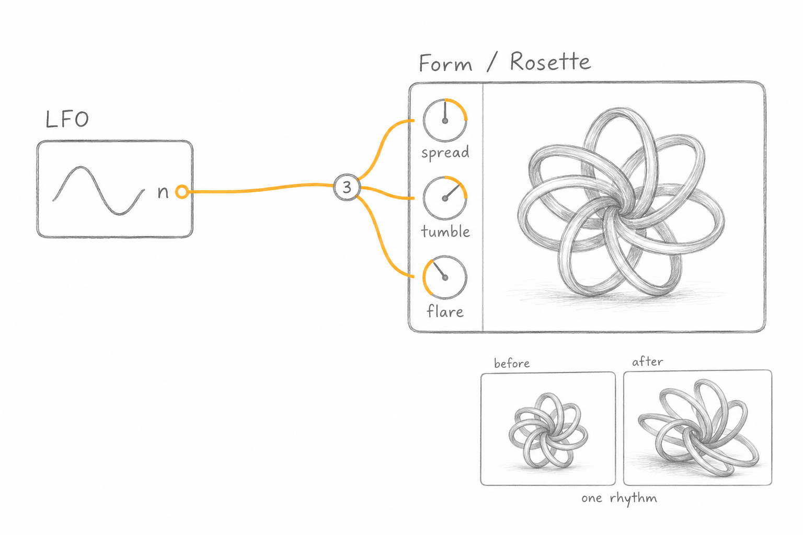
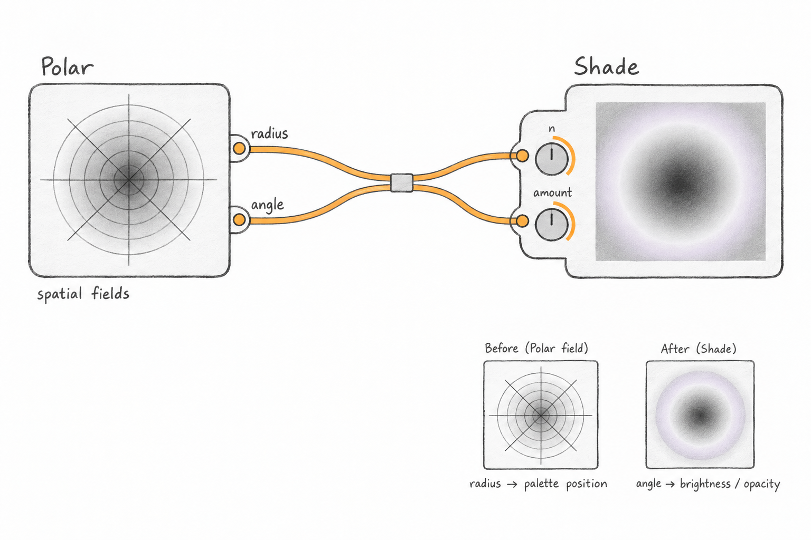
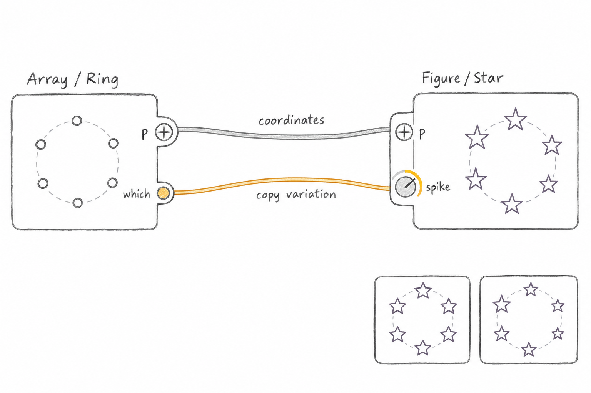
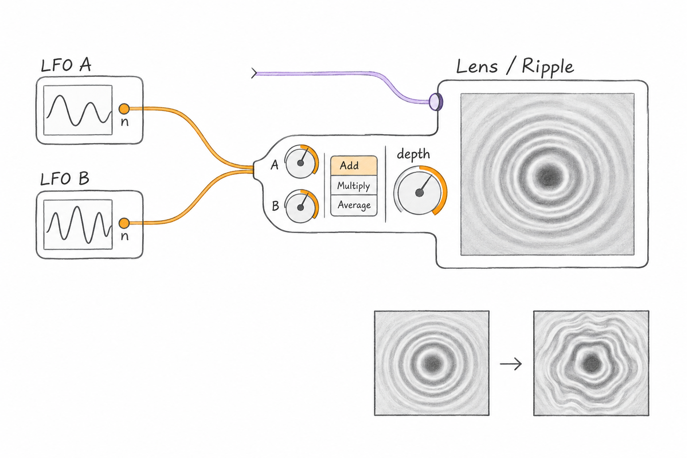
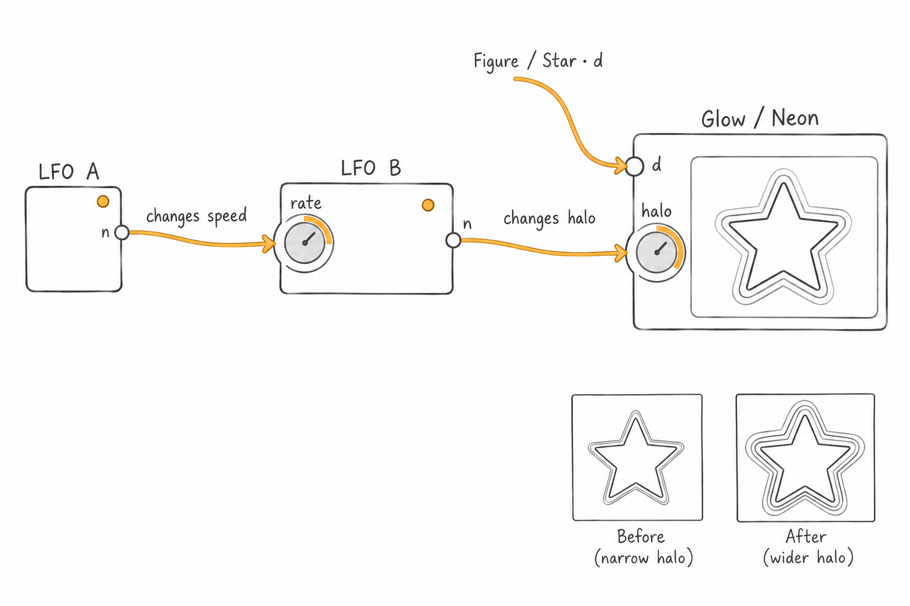
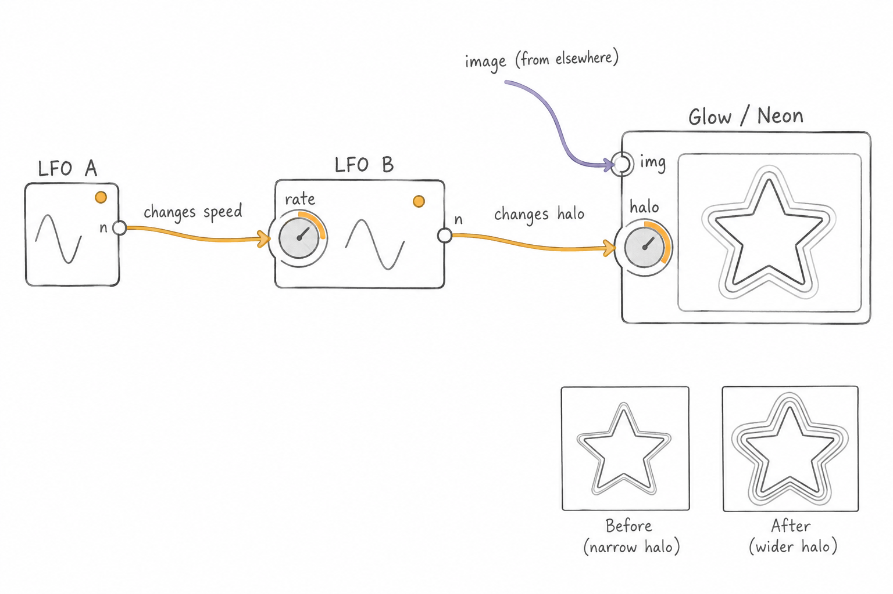

Growing connectors · Actual nodes
Five proposed arrangements using verified node ports. These are generated interaction studies, not screenshots or implemented features.
Interaction proposal and code evidence · Exact generation prompts
One LFO → three Rosette parameters

One source can coordinate spread, tumble and flare with independent signed depths. Generated study communicates fan-out but drifts into a permanent parameter strip, a waveform and a sculptural product rendering. Those are not selected UI directions.
Polar → Shade: two outputs, two inputs

Two outputs remain distinct: radius feeds palette position n; angle feeds amount. Joined controls read coherently. The sleeve needs interaction to make clear it bundles routes rather than combining values. Picture is illustrative, not renderer output.
Ring Array → Star: mixed signal bundle

Position p routes directly to p; numeric which modulates spike. The sketch appropriately gives a numeric knob only to spike. The variations look partly like changes in size rather than valley depth; do not treat preview as actual output.
Two LFOs → Ripple depth

Proposed connector-local mixing exposes source weights, combination mode, and target depth. Lens c picture feed is valid. Mixing is not implemented. Attachment is too large and sources wrongly show waveforms; these are generated concept limitations.
LFO → LFO → Neon — corrected

Corrected numeric Figure/Star.d → Glow/Neon.d feed, with LFO A.n → LFO B.rate and B.n → Neon.halo. Waveforms removed. Actual rate modulation may jump; smooth FM needs engine work. Previews are illustrative.
LFO → LFO → Neon: explicit rate modulation

Superseded draft: incorrectly draws a picture input into Neon and invents an img label. Retained for provenance; use corrected image.